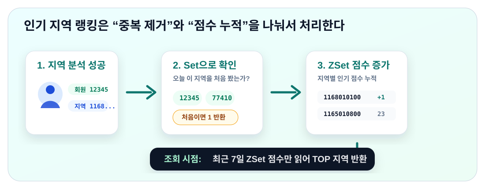

레디스 자료 구조 활용 사례
4장의 핵심은 “요구사항에 맞는 Redis 자료 구조 선택하기”
- 왜 레디스를 사용하면 좋은 상황인가.
- 왜 이 자료 구조인가.
Redis는 단순히 빠른 캐시가 아니라, 정렬·집합·카운팅·근사 계산·위치 탐색을 자료 구조 명령으로 처리할 수 있는 서버이다.
리더보드와 최근 검색 기록은 Sorted Set으로 생각한다.
태그와 좋아요처럼 중복 제거가 중요하면 Set을 본다.
정확도, 필드별 분리, 메모리 효율에 따라 Set, Hash, Bitmap, HLL로 나뉜다.
근처 장소나 사용자 탐색은 Geospatial 명령으로 처리할 수 있다.
| 기능 | RDB로 구현할 때 부담 | Redis 자료 구조가 맞는 이유 |
|---|---|---|
| 실시간 리더보드 | 점수 변경마다 정렬과 순위 계산이 반복된다. | Sorted Set은 member를 중복 없이 보관하고 score 기준 정렬 상태를 유지한다. |
| 최근 검색 기록 | 중복 검색어 확인, 최신순 정렬, 오래된 기록 삭제 로직이 필요하다. | Sorted Set은 검색어를 member로, 검색 시간을 score로 두어 중복 없는 최신순 목록을 만든다. |
| 태그 기능 | 태그-게시물 매핑 테이블 조인과 GROUP BY/HAVING이 필요하다. | Set은 중복 없는 관계와 교집합 연산을 직접 제공한다. |
| 랜덤 추출 | ORDER BY RAND()는 후보군을 읽고 섞는 비용이 크다. | Hash / Set / Sorted Set 내부에서 무작위 샘플을 바로 뽑을 수 있다. |
| 카운팅 | 좋아요, 읽지 않은 수, DAU를 같은 방식으로 세면 메모리와 정확도 문제가 생긴다. | Set / Hash / Bitmap / HLL 중 필요한 성질에 맞춰 선택한다. |
| 위치 기반 검색 | 좌표 거리 계산과 주변 후보 필터링을 애플리케이션에서 직접 처리해야 한다. | Geospatial은 좌표 저장과 반경/박스 검색을 명령으로 제공한다. |
S를 쓰기 때문에, Redis는 Sorted Set을 zset으로 줄여 부르고 명령어 접두어로 Z를 사용한다. 예를 들어 ZREVRANGE는 Z(Sorted Set) + REV(Reverse, 역순) + RANGE(범위 조회)로 읽을 수 있다. 즉, “Sorted Set에서 역순으로 범위를 조회한다”는 뜻이다.
Sorted Set을 이용한 실시간 리더보드
상황
게임이나 학습 애플리케이션에서는 사용자의 점수를 기반으로 실시간 순위표를 제공해야 한다.
전체 사용자를 정렬해 상위권을 보여주는 절대적 리더보드와, 특정 사용자 주변 순위나 그룹 내 순위를 보여주는 상대적 리더보드가 있다.
사용자가 늘어날수록 가공할 데이터는 커지고, 점수 변경은 실시간으로 반영되어야 하며, 그룹별·기간별 통계도 필요하다.
절대적 리더보드 · 전체 TOP 4
전체 사용자 중 상위 N명을 보여주는 방식이다. “누가 제일 높은가”가 핵심이다.
상대적 리더보드 · 내 주변 순위
특정 사용자나 그룹을 기준으로 주변 순위를 보여주는 방식이다. “내 위치가 어디인가”가 핵심이다.
왜 Sorted Set일까?
관계형 데이터베이스로 구현하면 점수 정렬 자체가 큰 부하가 될 수 있다. 반면 Sorted Set은 데이터가 저장될 때부터 score 순으로 정렬되므로 매번 정렬을 다시 할 필요가 없다.
핵심 커맨드ZADD · ZREVRANGE · ZINCRBY · ZUNIONSTORE
ZADD=Z(Sorted Set) +ADD(추가)ZREVRANGE=Z(Sorted Set) +REV(역순) +RANGE(범위)ZINCRBY=Z(Sorted Set) +INCR BY(값만큼 증가)ZUNIONSTORE=Z(Sorted Set) +UNION(합집합/합산) +STORE(저장)
데이터 저장 — ZADD
> ZADD daily-score:220817 28 player:286 (integer) 1 > ZADD daily-score:220817 400 player:234 357 player:24 199 player:143 (integer) 3
조회 — ZRANGE / ZREVRANGE
ZRANGE는 score 오름차순, ZREVRANGE는 내림차순으로 반환한다.
> ZREVRANGE daily-score:220817 0 2 WITHSCORES 1) "player:234" 2) "400" 3) "player:24" 4) "357" 5) "player:143" 6) "199"
스코어 업데이트 — ZADD / ZINCRBY
같은 아이템에 새 score를 저장하면 score만 업데이트되고 자동 재정렬된다. 증감 연산은 ZINCRBY로 처리한다.
> ZINCRBY daily-score:220817 100 player:24 "457"
랭킹 합산 — ZUNIONSTORE
ZUNIONSTORE는 여러 Sorted Set을 합쳐 새 Sorted Set으로 저장한다. 일별 점수 키를 합치면 주간 리더보드를 만들 수 있다.
> ZUNIONSTORE weekly-score:2208-3 3 daily-score:220815 daily-score:220816 daily-score:220817 (integer) 4 > ZUNIONSTORE weekly-score:2208-3 3 daily-score:220815 daily-score:220816 daily-score:220817 WEIGHTS 1 2 1 (integer) 4
WEIGHTS 1 2 1은 첫 번째 키의 점수는 1배, 두 번째 키의 점수는 2배, 세 번째 키의 점수는 1배로 반영한다는 뜻이다. 예를 들어 8월 16일에 “점수 두 배 이벤트”가 있었다면, 해당 날짜의 리더보드만 2배 가중치로 합산할 수 있다.
| 원본 키 | 가중치 | 합산 의미 |
|---|---|---|
daily-score:220815 | 1 | 그날 점수를 그대로 반영한다. |
daily-score:220816 | 2 | 이벤트 날짜라 점수를 두 배로 반영한다. |
daily-score:220817 | 1 | 그날 점수를 그대로 반영한다. |
Sorted Set을 이용한 최근 검색 기록
상황
쇼핑몰에서 사용자별 최근 검색 키워드를 5개까지 보여주는 기능이다. 사용자별로 다른 키워드를 보여줘야 하고, 검색 내역은 중복 제거되어야 하며, 가장 최근 검색한 5개만 남아야 한다.
오른쪽 회색 값은 Sorted Set의 score이다. 최근 검색 기록에서는 검색 시각을 score로 저장하므로, score가 클수록 더 최근 검색어로 위에 배치된다.
왜 Sorted Set일까?
검색 시간을 score로 사용하면 검색 시점 순으로 정렬할 수 있고, 같은 키워드는 member가 같기 때문에 중복이 생기지 않는다.
핵심 커맨드ZADD · ZREVRANGE · ZREMRANGEBYRANK
ZREMRANGEBYRANK는 Z(Sorted Set) + REM(Remove, 삭제) + RANGE(범위) + BY RANK(순위 기준)이다. 즉, “Sorted Set에서 순위 범위에 해당하는 값을 삭제한다”는 뜻이다.
데이터 저장 — ZADD
> ZADD search-keyword:123 20221106143501 코듀로이 (integer) 1
같은 검색어를 다시 ZADD하면 새 줄이 하나 더 생기는 것이 아니라, 기존 member의 score만 최신 시간으로 바뀐다.
최근 5개 조회 — ZREVRANGE
> ZREVRANGE search-keyword:123 0 4 WITHSCORES0 4는 “0번부터 4번까지”라서 개수로는 5개이다. 6번째 데이터는 존재해도 조회 결과에는 포함되지 않는다.
5개 초과 데이터 삭제 — ZREMRANGEBYRANK
음수 인덱스를 활용하면 매번 아이템 개수를 확인하지 않고도 5개 이상 저장되지 않도록 강제할 수 있다. 음수 인덱스는 마지막 값이 -1이고 역순으로 증가하는 값이다. 데이터가 6개일 때 가장 오래된 데이터의 음수 인덱스는 -6이다.
> ZADD search-keyword:123 20221106152734 버킷햇 (integer) 1 > ZREMRANGEBYRANK search-keyword:123 -6 -6 (integer) 1
-6 -6은 삭제 시작 위치와 끝 위치가 모두 -6이라는 뜻이다. 따라서 6번째, 즉 가장 오래된 데이터 하나만 제거된다.
ZADD 직후 항상 -6번째 인덱스를 삭제하는 로직을 추가하면, 6개 이상이 되는 순간 가장 오래된 데이터가 자동으로 제거된다. 아이템이 5개 이하일 때는 -6 인덱스가 존재하지 않으므로 영향을 주지 않는다.
랜덤 데이터 추출
상황
게임 유저 랜덤 매핑, 이벤트 당첨자 추첨, 가챠 아이템 추출처럼 후보군에서 무작위 데이터를 뽑아야 한다.
당첨
당첨
왜 레디스가 유리할까?
관계형 데이터베이스의 ORDER BY RAND()는 조건에 맞는 행을 읽고 정렬한 뒤 추출하므로 데이터가 많아지면 부하가 크다. Redis는 자료 구조 내부에서 랜덤 추출 명령을 제공하므로 랜덤 데이터를 O(1)의 시간 복잡도로 추출할 수 있다.
왜 O(1)일까?
Redis는 Hash, Set, Sorted Set 같은 자료 구조를 메모리 안에 해시 테이블이나 인덱스 형태로 들고 있다. 그래서 전체 후보를 매번 섞거나 정렬하지 않고, 내부 테이블의 임의 위치에서 바로 필드나 멤버를 고를 수 있다. 이 때문에 단건 랜덤 추출은 후보 수가 늘어나도 거의 일정한 비용으로 처리된다.
RDB에서 흔한 방식
후보가 많아질수록 읽고 섞고 정렬하는 비용이 함께 커진다.
Redis 랜덤 추출
내부 테이블의 임의 위치를 바로 선택한다. 단건 추출은 전체를 정렬하지 않는다.
핵심 커맨드RANDOMKEY · HRANDFIELD · SRANDMEMBER · ZRANDMEMBER
RANDOMKEY= 무작위 key 반환HRANDFIELD=H(Hash) +RAND(Random) +FIELD(필드)SRANDMEMBER=S(Set) +RAND(Random) +MEMBER(멤버)ZRANDMEMBER=Z(Sorted Set) +RAND(Random) +MEMBER(멤버)
RANDOMKEY— 전체 키 중 무작위 하나 반환HRANDFIELD— Hash에서 랜덤 필드 추출SRANDMEMBER— Set에서 랜덤 멤버 추출ZRANDMEMBER— Sorted Set에서 랜덤 멤버 추출
결과: id:4615
WITHVALUES: Jinnji
HRANDFIELD user:hash는 Hash의 필드 이름만 무작위로 반환한다. WITHVALUES를 붙이면 선택된 필드의 값까지 함께 반환한다.
> HRANDFIELD user:hash "id:4615" > HRANDFIELD user:hash 1 WITHVALUES 1) "id:4615" 2) "Jinnji"
COUNT가 양수일 때
HRANDFIELD user:hash 3
중복 없이 서로 다른 필드를 최대 COUNT개 반환한다.
COUNT가 음수일 때
HRANDFIELD user:hash -3
뽑은 값을 다시 후보군에 넣는 방식처럼 동작해 같은 필드가 여러 번 나올 수 있다.
SRANDMEMBER, ZRANDMEMBER도 같은 방식으로 이해하면 된다.
레디스의 다양한 카운팅 방법
1. 좋아요 처리하기
같은 사용자가 다시 눌러도 한 번만 저장된다. SCARD로 정확한 좋아요 수를 센다.
SCARD=S(Set) +CARD(Cardinality, 집합 원소 개수)HINCRBY=H(Hash) +INCR BY(값만큼 증가)SETBIT= bit 값을 설정한다BITCOUNT= 1로 설정된 bit 개수를 센다BITOP= bit 연산(Operation)을 수행한다
상황 — 뉴스 댓글에 좋아요를 누르는 기능이다. 한 명의 유저는 같은 댓글에 한 번만 좋아요를 누를 수 있어야 하므로 단순 개수가 아니라 누가 눌렀는지도 추적해야 한다.
해결 — Set에 유저 ID를 저장하면 중복 없이 관리할 수 있다.
> SADD comment-like:12554 967 (integer) 1 > SCARD comment-like:12554 (integer) 3
2. 읽지 않은 메시지 수 카운팅
사용자 안에 채널별 카운트를 두고 HINCRBY로 증감한다.
상황 — 채팅 애플리케이션에서 사용자가 속한 채널별 읽지 않은 메시지 수를 관리한다.
해결 — Hash로 사용자별 채널별 카운트를 저장하고, HINCRBY로 증감한다.
> HINCRBY user:234 channel:4234 1 (integer) 1 > HINCRBY user:234 channel:3435 -1 (integer) 26
3. DAU 구하기
사용자 ID 위치의 bit를 1로 바꾸고, BITCOUNT로 방문자 수를 센다.
상황 — 하루 동안 서비스를 방문한 고유 사용자 수를 실시간으로 측정한다. Set에 모두 저장하면 메모리와 큰 키 문제가 생길 수 있다.
해결 — 사용자 ID를 bit offset으로 사용하면 1,000만 명을 약 1.2MB로 표현할 수 있다.
SETBIT uv:20221106 14 1은 2022년 11월 6일 방문 기록에서 사용자 ID 14번 위치의 bit를 1로 바꾼다는 뜻이다. 이미 1이었다면 새 방문자로 늘어나지는 않는다.
> SETBIT uv:20221106 14 1 (integer) 0 > BITCOUNT uv:20221106 (integer) 3
SETBIT의 반환값 0은 “바꾸기 전 offset 14의 기존 bit 값이 0이었다”는 뜻이다. 그 위치를 1로 바꾼 뒤 BITCOUNT를 실행하면 1로 켜진 bit 개수, 즉 방문한 고유 사용자 수를 센다.
비트 연산 — BITOP
AND는 같은 위치가 모든 날짜에서 1일 때만 결과도 1이 된다. 위 예시에서는 1이 2개 남으므로 3일 모두 방문한 사용자는 2명이다.
> BITOP AND event:202211 uv:20221101 uv:20221102 uv:20221103 (integer) 2 > BITCOUNT event:202211 (integer) 2
BITOP AND event:202211 ...는 세 날짜의 비트맵을 AND 연산해서 결과 비트맵을 event:202211 키에 저장한다. 이 명령은 “저장” 명령이므로 응답값은 사람 수가 아니라 새로 만들어진 결과 비트맵의 바이트 길이이다.
실제 3일 모두 방문한 사용자 수는 그 다음 줄처럼 BITCOUNT event:202211로 다시 세야 한다. 이때 결과가 (integer) 2라면, 결과 비트맵 안에 1이 2개 있다는 뜻이므로 3일 모두 방문한 사용자가 2명이라는 의미이다.
HyperLogLog를 이용한 애플리케이션 미터링
상황
클라우드 서비스에서 사용자별 API 호출 횟수를 측정한다. 서버가 여러 대이고 로그가 초당 100개씩 쌓이면 한 달에 수억 건이 될 수 있다.
1. 들어오는 로그
2. 작은 요약 칸만 갱신
각 로그를 해시해서 몇 개의 요약 칸만 업데이트한다. 원본 ID 목록은 저장하지 않는다.
3. 고유 개수 추정
Set은 api:49483, api:32714 같은 원본 값을 모두 기억한다. HyperLogLog는 원본 값을 다시 꺼낼 수 없지만, 아주 작은 요약 정보만으로 고유 개수를 추정한다.
왜 HyperLogLog일까?
집합 내 유일한 데이터의 개수만 필요하고, 1% 미만의 오차를 허용할 수 있으며, 정확한 데이터를 다시 확인하지 않아도 된다면 HyperLogLog가 적합하다.
Set은 모든 데이터를 기억해야 하지만, HyperLogLog는 저장 공간이 약 12KB로 고정된다.
핵심 커맨드PFADD · PFCOUNT · PFMERGE
PF는 HyperLogLog 알고리즘의 기반 연구자인 Philippe Flajolet 이름에서 온 접두어이다. PFADD는 관측값 추가, PFCOUNT는 추정 개수 조회, PFMERGE는 여러 HyperLogLog 병합을 의미한다.
> PFADD 202211:user:245 49483 (integer) 1 > PFADD 202211:user:245 32714 (integer) 1 > PFADD 202211:user:245 49483 (integer) 1 > PFCOUNT 202211:user:245 (integer) 2
> PFMERGE 2022:user:245 202211:user:245 202212:user:245 "OK" > PFCOUNT 2022:user:245 (integer) 7
| 기능 요구사항 | Set | HyperLogLog |
|---|---|---|
| 정확한 개수 조회 | 가능하다. SCARD는 실제 원소 수를 센다. | 부적합하다. PFCOUNT는 근사값이다. |
| 특정 사용자의 참여 여부 확인 | 가능하다. SISMEMBER로 확인한다. | 불가능하다. 원소 목록을 보관하지 않는다. |
| 취소 처리 | 가능하다. SREM으로 원소를 제거한다. | 불가능하다. 개별 원소를 제거할 수 없다. |
| 원소 목록 조회 | 가능하다. SMEMBERS로 확인한다. | 불가능하다. 요약 정보만 남는다. |
Geospatial Index를 이용한 위치 기반 애플리케이션
spatial은 space의 형용사형으로 “공간의”라는 뜻이다. geo는 지리·지구·위치를 뜻하므로, geospatial은 “지리 공간의”, 즉 경도와 위도 같은 위치 좌표를 다루는 개념이다.
상황
지도 애플리케이션이나 맞춤 광고 서비스에서는 사용자의 현재 위치 파악, 이동에 따른 실시간 위치 업데이트, 사용자 위치 기준 근처 장소 검색이 필요하다.
왜 레디스가 유리할까?
Redis는 데이터 저장과 실시간 위치 연산을 함께 수행할 수 있어 네트워크 트래픽과 애플리케이션 코드의 복잡성을 줄일 수 있다. Geo Set과 Pub/Sub을 조합하면 특정 위치 근처 사용자에게 실시간 알림을 보내는 식의 응용도 가능하다.
핵심 커맨드GEOADD · GEOPOS · GEOSEARCH
GEOADD=GEO(지리 좌표) +ADD(추가)GEOPOS=GEO(지리 좌표) +POS(Position, 위치)GEOSEARCH=GEO(지리 좌표) +SEARCH(검색)
저장 — GEOADD
> GEOADD restaurant 50.192837912837 14.912837912837 ukalendu (integer) 1
GEOADD <key> 경도 위도 멤버 순서이다. 같은 멤버에 새 좌표를 입력하면 위치가 업데이트된다.
GEOADD를 실행하면 멤버 이름은 Sorted Set의 member로 저장되고, 경도·위도 좌표는 GeoHash 방식으로 인코딩된 숫자 score로 저장된다.
| 입력한 Geo 데이터 | 내부 Sorted Set 관점 | 의미 |
|---|---|---|
key = restaurant | zset key = restaurant | Geo 데이터셋 하나가 Sorted Set 하나로 관리된다. |
member = ukalendu | member = ukalendu | 장소나 사용자를 식별하는 이름이다. |
lon = 50.1928, lat = 14.9128 | score = encoded geohash number | 경도와 위도를 하나의 정렬 가능한 숫자로 변환한 값이다. |
> TYPE restaurant zset > ZRANGE restaurant 0 -1 WITHSCORES 1) "ukalendu" 2) "3479... 형태의 GeoHash score"
즉, 개발자는 GEOADD, GEOPOS, GEOSEARCH 같은 Geo 명령을 사용하지만, Redis 내부에서는 위치를 “멤버 이름 + 정렬 가능한 숫자 score” 형태로 관리한다. 이 구조 덕분에 특정 좌표 주변의 후보를 빠르게 좁혀서 검색할 수 있다.
조회 — GEOPOS
> GEOPOS restaurant ukalendu 1) 1) "50.192837912837" 2) "14.912837912837"
근처 검색 — GEOSEARCH
> GEOSEARCH restaurant FROMLONLAT 50.192837912837 14.912837912837 BYRADIUS 1 KM 1) "ukalendu"
FROMLONLAT— 직접 경도/위도를 지정해 검색FROMMEMBER— 같은 데이터셋 내 멤버를 기준으로 검색BYRADIUS— 반지름 기준 원형 영역 검색BYBOX— width와 height를 지정한 직사각형 영역 검색
반대로 BYBOX의 숫자는 반지름이 아니라 직사각형의 전체 가로 길이와 전체 세로 길이이다. 그래서 BYBOX 4 2 KM는 “중심에서 4km까지”가 아니라 “가로 전체가 4km, 세로 전체가 2km인 박스”를 뜻한다. 기준점이 박스의 가운데에 있으므로 실제 검색 범위는 좌우 2km, 상하 1km가 된다.
BYRADIUS 2 KM
입력값 2km가 중심점에서 경계까지의 거리이다. 원의 지름은 결과적으로 4km가 된다.
BYBOX 4 2 KM
입력값 4km와 2km는 박스의 전체 크기이다. 중심 기준으로는 가로가 반씩, 세로가 반씩 나뉜다.
정리하면 BYRADIUS 2 KM는 “중심에서 2km 이내”이고, BYBOX 4 2 KM는 “중심을 가운데로 둔 4km × 2km 사각형 안”이다. 같은 숫자라도 의미하는 기준이 다르다.
실무 사례: 인기 지역 랭킹
상황
사용자가 지역 랭킹 분석을 성공하면 해당 지역의 인기 점수를 올리는 구조이다. 단, 같은 회원이 같은 지역을 하루에 여러 번 분석해도 인기 점수는 한 번만 올라야 한다.

Set: 일자별·지역별 중복 제거
region:viewers:{yyyyMMdd}:{regionCode}
member는 memberId이다. 같은 회원이 같은 지역을 하루에 여러 번 분석해도 Set에는 한 번만 저장된다.
Sorted Set: 일자별 인기 점수 누적
popular:regions:{yyyyMMdd}
member는 regionCode, score는 해당 날짜의 유니크 조회/분석 수이다.
커맨드 흐름
SADD region:viewers:20260430:1168010100 12345
2026년 4월 30일에 1168010100 지역을 본 회원 목록에 12345번 회원을 추가한다. 반환값이 1이면 오늘 이 지역을 처음 본 회원이고, 0이면 이미 반영된 회원이다.
EXPIRE region:viewers:20260430:1168010100 604800
일자별·지역별 방문자 Set을 7일 뒤 자동 삭제한다. 최근 7일 기준 랭킹이므로 오래된 키는 Redis가 정리하게 둔다.
ZINCRBY popular:regions:20260430 1 1168010100
SADD 결과가 1일 때만 실행한다. Sorted Set에서 1168010100 지역의 점수를 1 올려 같은 회원의 반복 분석이 점수를 여러 번 올리지 않게 한다.
ZRANGE popular:regions:20260430 0 -1 WITHSCORES
해당 날짜의 모든 지역 코드와 점수를 가져온다. 조회 시에는 최근 7일치 popular:regions:{yyyyMMdd} 키를 읽고 점수를 합산한 뒤 상위 지역을 반환한다.
집계 방식 비교
| 방식 | 쓰기 시점 | 조회 시점 |
|---|---|---|
| Redis 사용 | SADD로 중복 제거 후 신규 회원이면 ZINCRBY로 점수 누적 | 최근 7일 ZSet만 읽어 합산 |
| Redis 미사용 | 조회 로그를 DB 테이블에 저장 | COUNT(DISTINCT DATE(viewed_at), member_id) + GROUP BY region_code + ORDER BY score DESC |
ZINCRBY 같은 점수 갱신은 보통 O(log N), ZRANGE 같은 범위 조회는 O(log N + M)으로 설명한다. 여기서 N은 Sorted Set 원소 수, M은 반환하는 원소 수이다.
이 사례에서 Redis가 유리한 이유는 “모든 명령이 O(1)”이기 때문이 아니라, 원본 로그 전체를 매번 집계하지 않고 이미 누적된 랭킹 자료구조를 읽기 때문이다. Set의 SADD는 평균 O(1)에 가까운 중복 제거를 맡고, Sorted Set은 O(log N) 비용으로 점수 순서를 유지한다.
성능 비교
| 이벤트 수 | Redis 조회 평균 | MySQL 집계 조회 평균 | 차이 |
|---|---|---|---|
| 10,000건 | 3.43ms | 4.90ms | 1.4배 |
| 100,000건 | 2.13ms | 53.37ms | 25.0배 |
| 500,000건 | 2.27ms | 245.07ms | 108.1배 |
데이터가 더 커지면?
아래 표는 실측값이 아니라 단순 선형 추정이다. 즉 500,000건에서 측정된 MySQL 집계 조회 시간 245.07ms를 기준으로 이벤트 수가 2배, 20배, 200배가 되면 조회 시간도 같은 비율로 늘어난다고 가정한 값이다. 질문처럼 “0을 붙인 만큼 조회 시간에도 0을 붙인” 계산이 맞다.
| 이벤트 수 | MySQL 집계 조회 단순 추정 | 초 단위 | Redis 조회 예상 |
|---|---|---|---|
| 500,000건 | 약 245ms | 약 0.245초 | 약 2~3ms |
| 1,000,000건 | 약 490ms | 약 0.49초 | 약 2~4ms |
| 10,000,000건 | 약 4,900ms | 약 4.9초 | 약 2~5ms |
| 100,000,000건 | 약 49,000ms | 약 49초 | 약 2~10ms |
반대로 Redis 조회 예상값은 전체 이벤트 수가 아니라 “최근 7일의 일별 Sorted Set에 들어 있는 지역 수”에 더 크게 영향을 받는다. 지역 후보가 500개 수준으로 유지된다면 조회 대상은 원본 이벤트 1억 건이 아니라 7일 × 지역 수 정도의 누적 점수이다.
Set으로 “오늘 이 지역을 처음 본 회원인가?”를 판별하고, Sorted Set으로 “지역별 인기 점수”를 누적한다. 그래서 조회 시점에는 거대한 로그를 다시 집계하지 않고 이미 누적된 점수만 읽으면 된다.